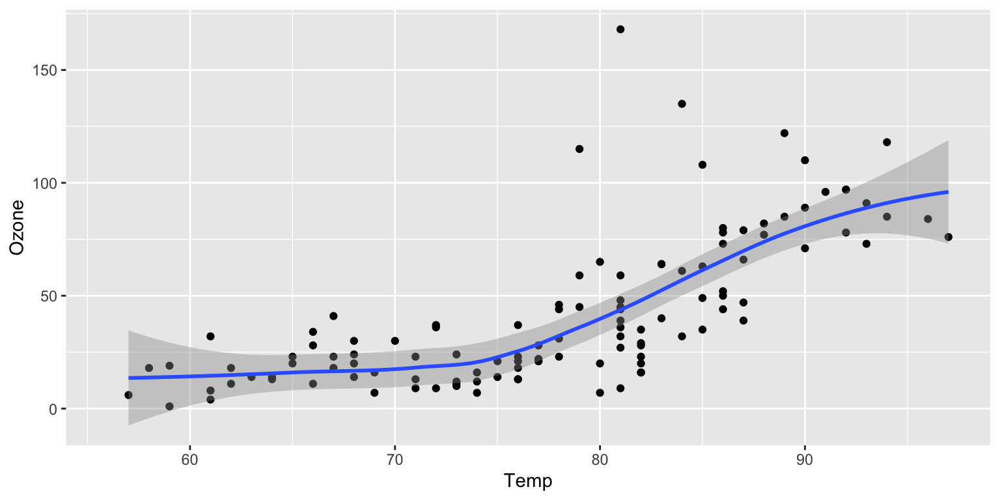
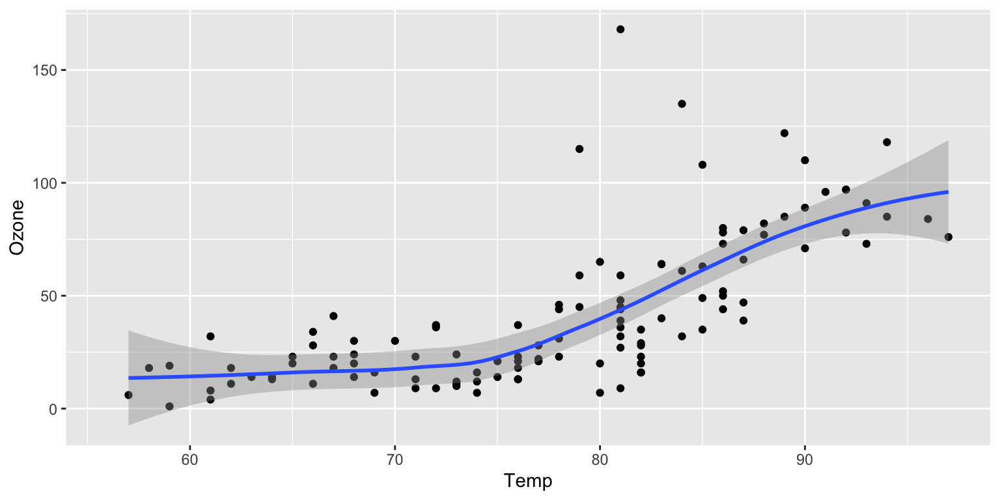
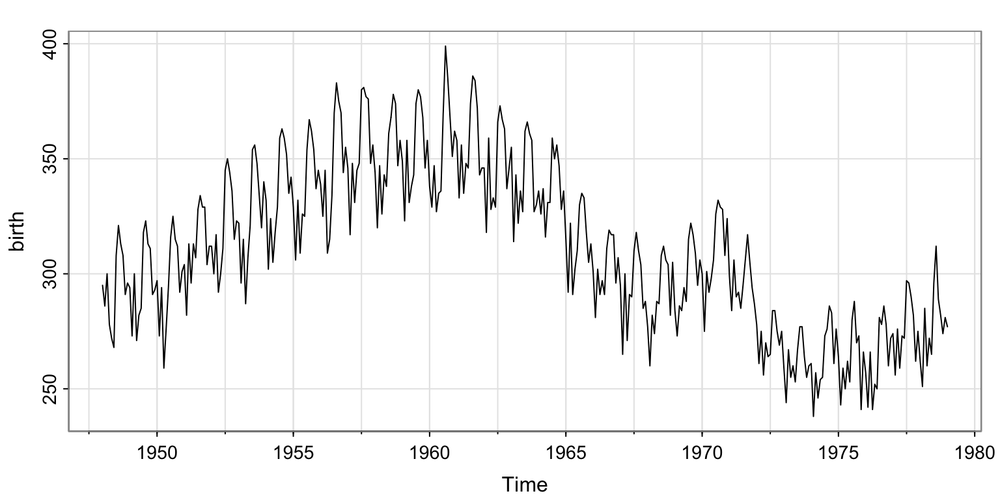
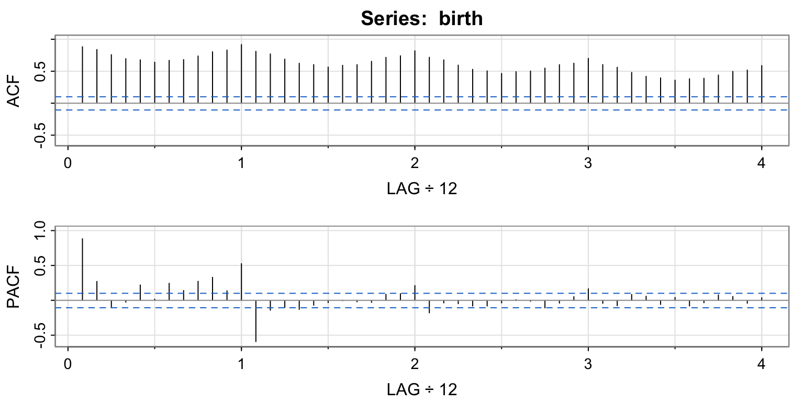
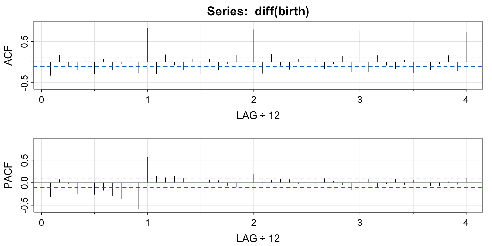
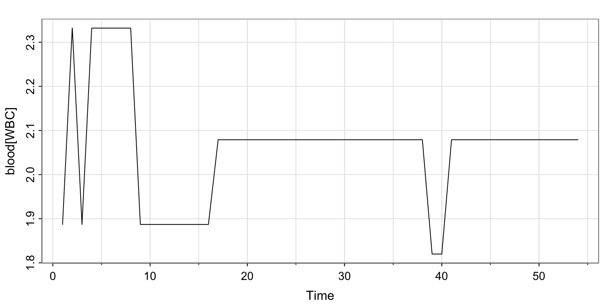
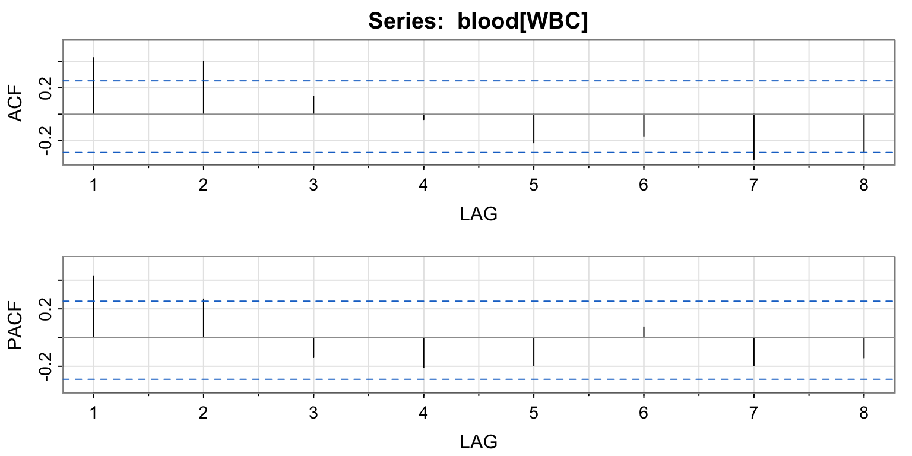

Code
library(ggplot2)
ggplot(airquality, aes(Temp, Ozone)) +
geom_point() +
geom_smooth(method = "loess"
)
Figure 1 further explores the impact of temperature on ozone level. (Example of how to use this…)
library(ggplot2)
ggplot(airquality, aes(Temp, Ozone)) +
geom_point() +
geom_smooth(method = "loess"
)
Now we want to use functions from the textbook
# downlpad astsa
install.packages("remotes", repos = "http://cran.us.r-project.org") # if you don't have the package already
The downloaded binary packages are in
/var/folders/7r/39t1cgb13d57zk26c__2z50m0000gn/T//RtmprWiRTk/downloaded_packagesremotes::install_github("nickpoison/astsa/astsa_build")Skipping install of 'astsa' from a github remote, the SHA1 (b1ad98b4) has not changed since last install.
Use `force = TRUE` to force installationlibrary(astsa)Birth example, figure 5.11
#
tsplot(birth)
acf2(birth)
[,1] [,2] [,3] [,4] [,5] [,6] [,7] [,8] [,9] [,10] [,11] [,12] [,13]
ACF 0.88 0.84 0.76 0.70 0.68 0.64 0.67 0.68 0.74 0.80 0.83 0.92 0.81
PACF 0.88 0.27 -0.10 -0.03 0.22 0.02 0.24 0.14 0.27 0.33 0.14 0.53 -0.59
[,14] [,15] [,16] [,17] [,18] [,19] [,20] [,21] [,22] [,23] [,24] [,25]
ACF 0.77 0.69 0.62 0.60 0.56 0.59 0.60 0.65 0.72 0.74 0.82 0.72
PACF -0.14 -0.10 -0.13 -0.07 -0.03 0.00 -0.02 -0.03 0.09 0.09 0.21 -0.18
[,26] [,27] [,28] [,29] [,30] [,31] [,32] [,33] [,34] [,35] [,36] [,37]
ACF 0.68 0.59 0.53 0.50 0.46 0.49 0.50 0.55 0.60 0.62 0.70 0.60
PACF -0.04 -0.05 -0.08 -0.08 -0.04 0.01 -0.01 -0.11 -0.04 0.05 0.17 -0.04
[,38] [,39] [,40] [,41] [,42] [,43] [,44] [,45] [,46] [,47] [,48]
ACF 0.56 0.48 0.42 0.40 0.36 0.38 0.39 0.44 0.50 0.52 0.59
PACF -0.08 0.08 0.06 -0.06 0.04 -0.08 -0.03 0.08 0.05 -0.04 0.04acf2(diff(birth))
[,1] [,2] [,3] [,4] [,5] [,6] [,7] [,8] [,9] [,10] [,11] [,12]
ACF -0.32 0.16 -0.08 -0.19 0.09 -0.28 0.06 -0.19 -0.05 0.17 -0.26 0.82
PACF -0.32 0.06 -0.01 -0.25 -0.03 -0.26 -0.17 -0.29 -0.35 -0.16 -0.59 0.57
[,13] [,14] [,15] [,16] [,17] [,18] [,19] [,20] [,21] [,22] [,23] [,24]
ACF -0.28 0.17 -0.07 -0.18 0.08 -0.28 0.07 -0.18 -0.05 0.16 -0.24 0.78
PACF 0.13 0.11 0.13 0.09 0.00 0.00 0.05 0.04 -0.07 -0.10 -0.20 0.19
[,25] [,26] [,27] [,28] [,29] [,30] [,31] [,32] [,33] [,34] [,35] [,36]
ACF -0.27 0.19 -0.08 -0.17 0.07 -0.29 0.07 -0.15 -0.04 0.14 -0.24 0.75
PACF 0.01 0.05 0.07 0.07 -0.02 -0.06 -0.02 0.09 0.03 -0.06 -0.16 0.03
[,37] [,38] [,39] [,40] [,41] [,42] [,43] [,44] [,45] [,46] [,47] [,48]
ACF -0.23 0.16 -0.08 -0.15 0.05 -0.25 0.06 -0.18 -0.03 0.15 -0.22 0.72
PACF 0.08 -0.10 -0.03 0.07 -0.04 0.06 0.04 -0.07 -0.06 0.02 -0.04 0.10Another dataset to see what its like…
#
tsplot(blood[WBC])
acf2(blood[WBC])
[,1] [,2] [,3] [,4] [,5] [,6] [,7] [,8]
ACF 0.43 0.40 0.14 -0.04 -0.22 -0.17 -0.34 -0.29
PACF 0.43 0.27 -0.14 -0.21 -0.20 0.07 -0.20 -0.14# acf2(diff(blood))